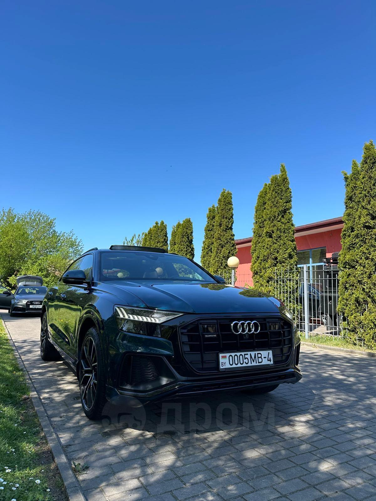
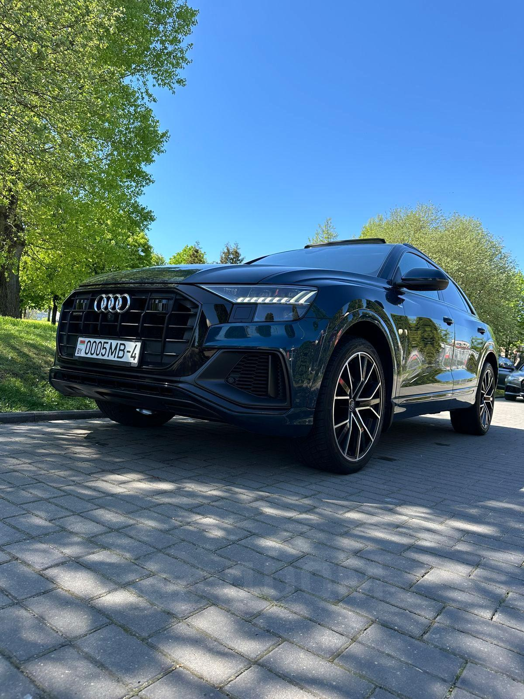
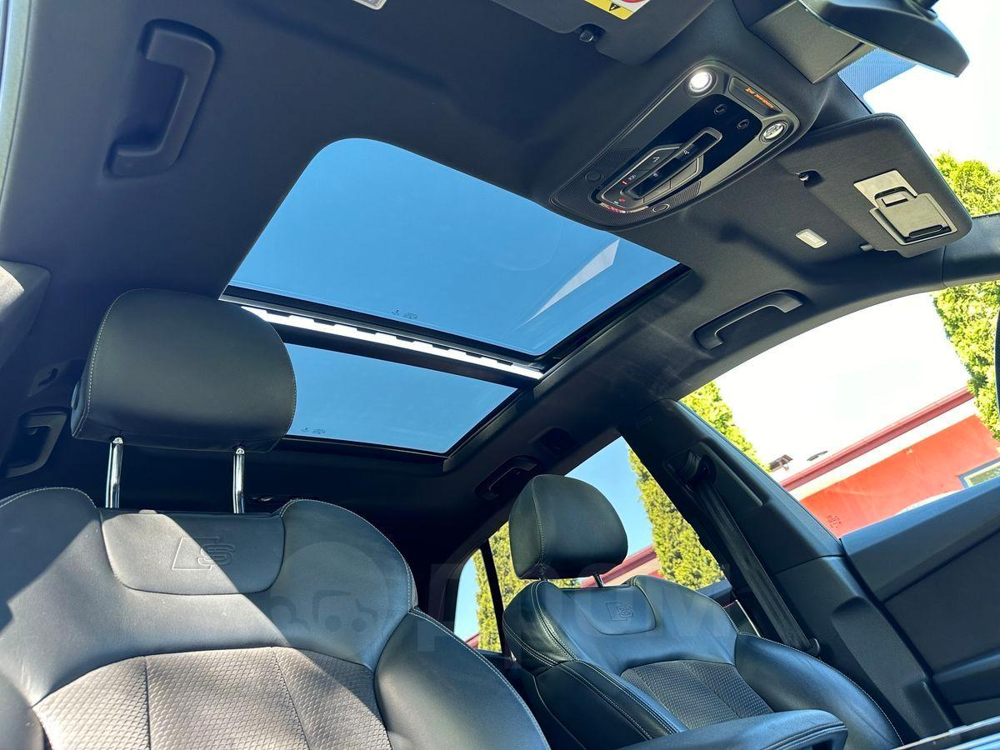
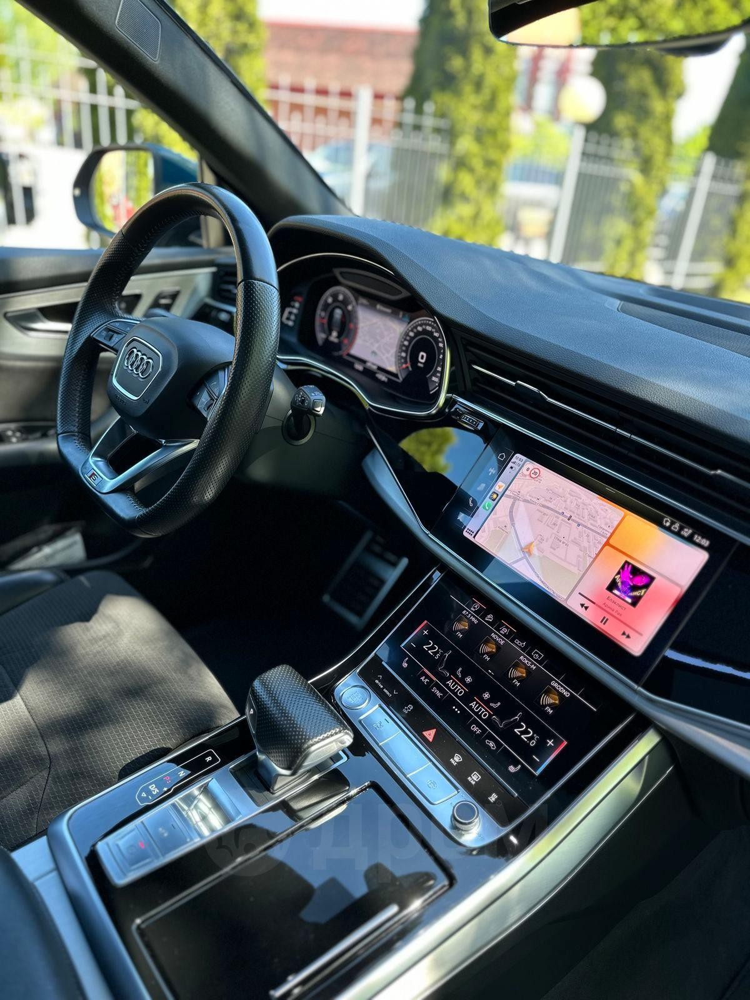

Audi Q8 50 TDI (2018)




5 900 000 ₽
Описание
Роскошный немецкий кроссовер в уникальном зеленом цвете. Сочетает в себе элегантность купе и практичность внедорожника.
Безрамочные двери, топовая мультимедиа с двумя экранами, пневмоподвеска и легендарный полный привод Quattro. Двигатель 3.0 TDI — это эталон надежности и экономичности.
Характеристики
- Год: 2018
- Пробег: 160 000 км
- Привод: Полный (Quattro)
- Двигатель: 3.0 л Дизель / 286 л.с.
- КПП: Автомат (Tiptronic)